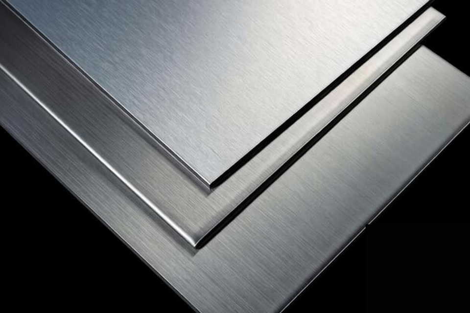

PVD Coating Materials / Sputtering Targets
Nickel Vanadium Alloy Target
镍钒合金靶
Specifications
| Product Name | Nickel Vanadium Alloy Target |
|---|---|
| Chinese Name | 镍钒合金靶 |
| Product Line | PVD Coating Materials |
| Category | Sputtering Targets |
| Formula / Composition | Ni-V |
| Purity | 99.9%~99.99% |
| Standard Size | Round Target Dia < 350mm; Rectangular Target Width < 240mm; Rectangular Target Length < 550mm |
| Packaging | 真空包装 |
| Customization | 是 |
Product Features
圆形，方形
원형, 정사각형
Applications
高纯镍钒合金靶材核心用于半导体先进封装金布线粘附阻挡层、芯片铜互连防扩散衬膜，无磁性适配高速磁控溅射，简化晶圆镀膜工序；同时是 5G射频滤波器电极、显示TFT线路缓冲层主流材料。还可沉积芯片精密薄膜电阻、光伏电池电极阻挡膜、MEMS传感功能层与五金耐磨装饰镀膜。
High-purity nickel-vanadium alloy targets are mainly used as gold-wiring adhesion barrier layers in advanced semiconductor packaging and copper-interconnect diffusion-barrier liners for chips. Their non-magnetic properties suit high-speed magnetron sputtering and simplify wafer coating processes. They are also mainstream materials for 5G RF filter electrodes and display TFT circuit buffer layers, and can be used for precision chip thin-film resistors, photovoltaic electrode barrier films, MEMS sensing layers, and wear-resistant decorative coatings.
고순도 니켈-바나듐 합금 타겟은 첨단 반도체 패키징의 금 배선 접착 장벽층과 칩용 구리 상호 연결 확산 장벽 라이너로 주로 사용됩니다. 비자성 특성은 고속 마그네트론 스퍼터링에 적합하고 웨이퍼 코팅 공정을 단순화합니다. 또한 5G RF 필터 전극 및 디스플레이 TFT 회로 버퍼 층의 주류 재료이며 정밀 칩 박막 저항기, 광전지 전극 배리어 필름, MEMS 감지 층 및 내마모성 장식 코팅에 사용할 수 있습니다.
RFQ Checklist